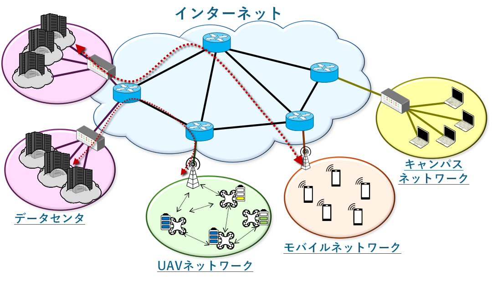

研究概要
医用情報ネットワーク学研究室では，IoT（Internet of Things）時代における最先端のネットワーク技術の研究開発に取り組んでいます． 8K動画配信，自動運転，遠隔手術など，従来よりもさらに大容量・低遅延・高信頼な通信が求められるアプリケーションを支える情報基盤の実現を目指しています．
私たちは，データセンターネットワーク，UAV（無人航空機）ネットワーク，モバイルネットワーク，キャンパスネットワークなど，多様なネットワーク環境における課題解決に挑戦しています． さらに，セキュリティやプライバシー保護，AIを活用したネットワーク制御，エッジコンピューティングなど，未来の社会を支えるICT基盤の構築に貢献します．